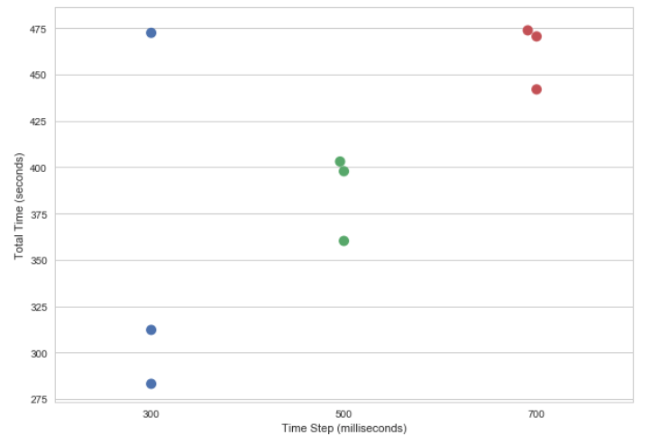
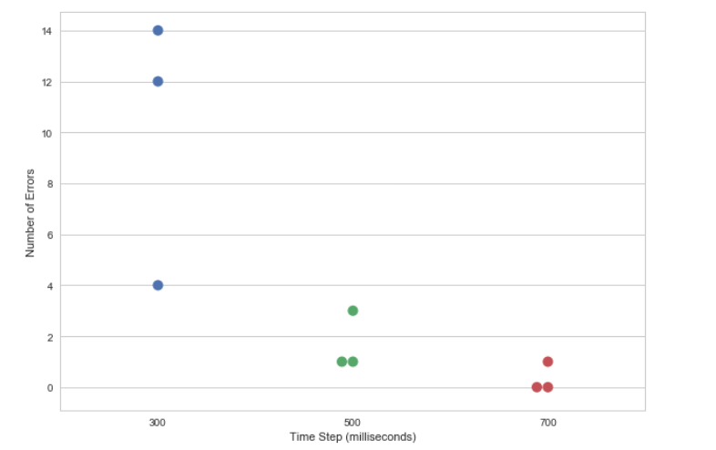
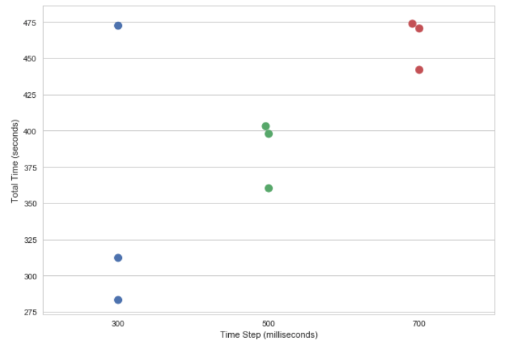
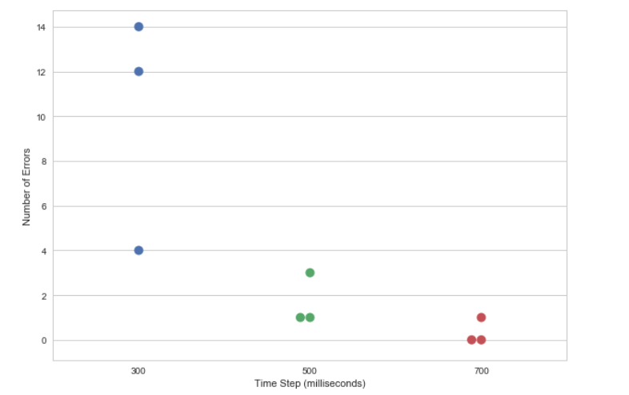

Instructions: A timer will cycle through the buttons. Use the spacebar to select the highlighted key.
Instructions: Use the "N" key to move to the right. Use the "M" button to move down. Select the highlighted key with the spacebar.
Test Methods
I tested three different time settings for the single-button switch mode (300 milliseconds, 500 milliseconds, 700 milliseconds). For each test, I had 8 equations (4 simple, 4 complex). I ran each test 3 times.
I used a Python script to generate random equations for each test to mitigate for the results of having easier/harder number combinations (for example, 82 / 6 is easier to type than 77 - 7). You can see my scripts in a Jupyter notebook here.
Here's the test data I collected:
Include information here about your app.
Here's a plot of the time taken to complete the task, by time interval:

You can see that, as you would expect, the longer the interval, the longer it takes to complete all 8 equations. The relationship also looks somewhat linear.
And here's a plot of the number errors in each task, by time interval:

Here, you can see that there's not a big difference in the errors produced with the 500 millisecond condition versus the 700 millisecond condition. I think this is because we're approaching the error floor (that is, it's relatively error free, or the errors are incidental/not a result of the time interval).
Because 500 and 700 milliseconds had roughly the same error rate, at yet 500 milliseconds was faster to complete, I ended up going with the 500 millisecond setting for my final product.
About this app
Select a switch mode.
Test Methods
I tested three different time settings for the single-button switch mode (300 milliseconds, 500 milliseconds, 700 milliseconds). For each test, I had 8 equations (4 simple, 4 complex). I ran each test 3 times.
I used a Python script to generate random equations for each test to mitigate for the results of having easier/harder number combinations (for example, 82 / 6 is easier to type than 77 - 7). You can see my scripts in a Jupyter notebook here.
Here's the test data I collected:
Include information here about your app.
Here's a plot of the time taken to complete the task, by time interval:
You can see that, as you would expect, the longer the interval, the longer it takes to complete all 8 equations. The relationship also looks somewhat linear.
And here's a plot of the number errors in each task, by time interval:
Here, you can see that there's not a big difference in the errors produced with the 500 millisecond condition versus the 700 millisecond condition. I think this is because we're approaching the error floor (that is, it's relatively error free, or the errors are incidental/not a result of the time interval).
Because 500 and 700 milliseconds had roughly the same error rate, at yet 500 milliseconds was faster to complete, I ended up going with the 500 millisecond setting for my final product.
Some other interesting things I noticed: